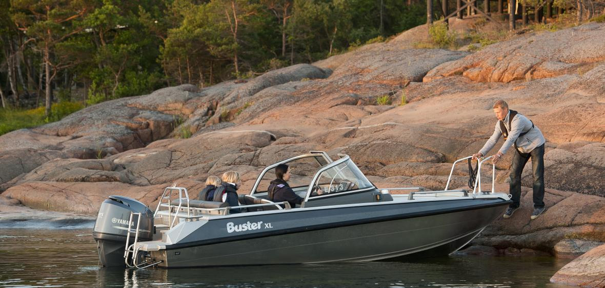
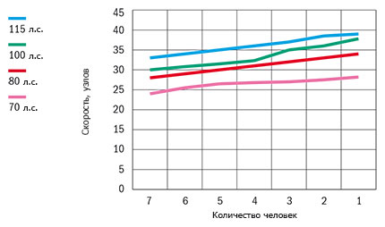

Катер Buster XL (Бустер XL)
Buster XL (Бустер XL) – экономичная и просторная. Buster XL (Бустер XL) – самая малая из больших моделей Buster. Лодка соединяет в себе отличные ходовые характеристики и является экономической альтернативой более мощным моделям. Стильная, имеющая прочное строение корпуса, Buster XL отлично подходит для работы и отдыха. Как и все модели Buster, Buster XL (Бустер XL) – лёгкая и неприхотливая в обслуживании, однако благодаря спортивным формам с нотками роскоши.
Buster XL (Бустер XL) – отличный выбор для тех яхтсменов, которые ценят высокое качество, а также экономичность и практичность для которых, являются важными критериями при выбора катера. Ветровое закалённое стекло с очистителем обеспечивают дополнительный комфорт и безопасность. Большое количество багажных отсеков добавляет удобство путешественникам. Аудио система, опция ENTERTAINMENT, гарантирует дополнительный комфорт на длительные расстояния.
Buster XL (Бустер XL) – одна из самых популярных моделей модельного ряда Buster, и не без оснований. Непотопляемая и прямолинейная Buster XL (Бустер XL) – надёжный выбор для путешествий на острова и проведения свободного времени на воде. На корме – удобные увеличенные задние площадки, радующие глаз. Не удивительно, что Buster XL (Бустер XL), по результатам опроса среди читателей известного финского журнала водно-моторной техники, назван самой популярной финской лодкой 2012 года! Заслуженное нами доверие является для нас вопросом чести.
Технические характеристики катера:
| Параметр | Buster XL |
|
Длина |
5.94 м |
|
Ширина |
2.17 м |
|
Масса (Без двигателя) |
600 кг |
|
Вместимость |
6 человек |
|
Рекоменд. мощность двигателя |
70 - 115 л.с. |
|
Емкость топливного бака |
100 л |
|
Осадка при полной нагрузке |
0,3 м |
|
Максимальная скорость |
39 узлов |
|
V-угол дна |
19° |
| График скорости | |
|  | |
Стандартное оборудование:
- Гидравлическое рулевое управление
- Консоль управления, ветровое стекло, закалённое
- Консоль левая, ветровое стекло, закалённое
- Багажные отсеки внутри консолей
- Стационарная дверь между консолями
- Закрывающиеся багажные отсеки (система запирания замков одним ключом)
- Встроенный ящик для хранения тента
- Мягкие кресла Offshore 2шт. с чехлами
- Ножка для кресла на рессорах
- Якорные боксы на корме, слева и справа
- Задние площадки на корме для спуска в воду
- Забортный трап
- Огнетушитель
- Чехол для аккумулятора
- Центральный выключатель с автоматическими предохранителями
- Автоматическая трюмная помпа
- Стационарный топливный бак
- Навигационные огни
- Мачта, съёмная
- Электрический разъём 12V
- Самоосушающийся кокпит
- Подготовительные работы для установки системы слежения Buster
Дополнительное оборудование:
- Тент на корму, из двух частей
- Тент стояночный
- Штанга для буксировки вейкбордиста
- Подставка для вейкборда на штангу
- Тарга-дуга
- Стенд для троллинга на тарга-дугу, на 8 удилищ
- Очиститель ветрового стекла, левая сторона
- Очиститель ветрового стекла, правый (установка на заводе)
- Сиденье-бокс 45 л.
- Боковое сиденье
- Транцевые плиты с джойстиковым управлением (установка на заводе)
- Подставка для установки дополнительного мотора
- Подставка для крепления датчика эхолота
- Компас
- Система запирания (трос, замки Abloy, система запирания одним ключом)
- Мягкая подушка, заднее сиденье
- Мягкая подушка, спинка заднего сиденья
- Мягкая подушка, сиденье-бокс, 45 л.
- Мягкая подушка, боковое сиденье
- Цифровая радарная антенна Garmin GMR 18 HD/4kW (установка на заводе)
- NAVI 7*
- Comfort*
- Canvas*
- Entertaiment*
*Дополнительные опции устанавливаемые на заводе-изготовителе
NAVI 7: Картплоттер Garmin 720s, компас, датчик эхолота с креплением
Comfort: Подушки на спинку заднего сиденья и заднее сиденье
Canvas: Ходовой тент
Entertaiment: Магнитола, динамики, антенна
{kind=link}
{kind=link}
{kind=link}
{kind=link}
{kind=link}
{kind=link}